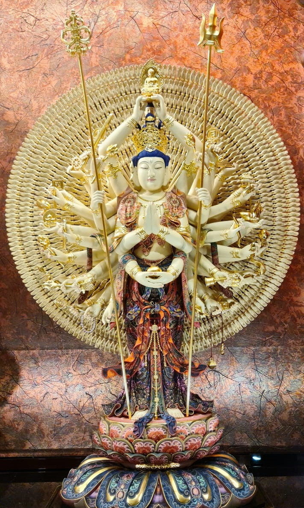

The correct attitude when seeking for guidance
- View the result with an open mind, to avoid unnecessay anxiety.
- If the result is [not good], you should know that it is because of the karma of the previous life. Therefore, you must repent, pray, provide for, and change for good.
- If the result is [very good], there is no need to be overjoyed or be overwhelmed.
- If the result of the request is [paradoxical], you must be aware of the facts. All virtuous karma when met with a favourable condition will eventually yield fruitful results, and will not be wasted, and it will definitely benefit the development of the situation.
- Hope everyone can get wisdom from it and make good use of it, so as to obtain temporary and ultimate happiness.
求签者应有的心态
- 对求签结果，应豁达面对，避免患得患失。
- 如果求签结果【不好】，应知乃因前世业力所感，故须励力忏悔、祈祷、供养、改过迁善，得以改变结局，因祸为福。
- 如果结果【甚佳】，也不必大喜过望、得意忘形。
- 如果求签结果【似是而非】，须知事在人为。如果力为顺缘，则一切善业终必有果，绝不空耗，对事态的发展绝对会有所裨益。
- 希望大家能从中得到启示并善用，来成办今生安乐乃至究竟快乐的助缘。